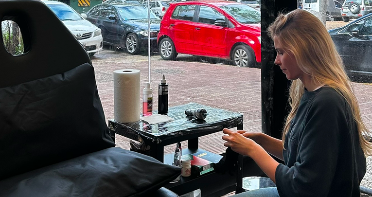
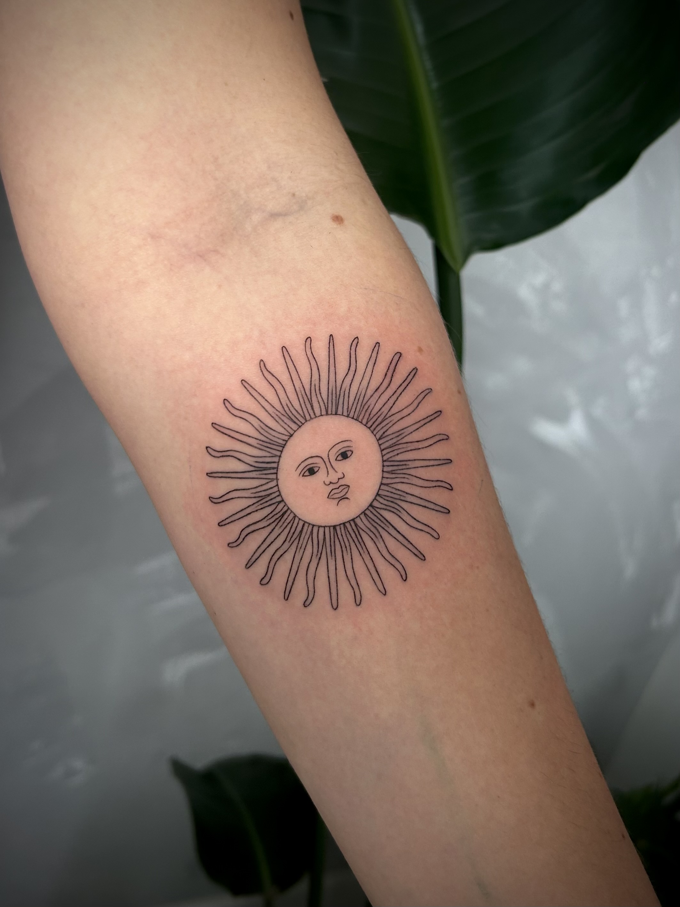
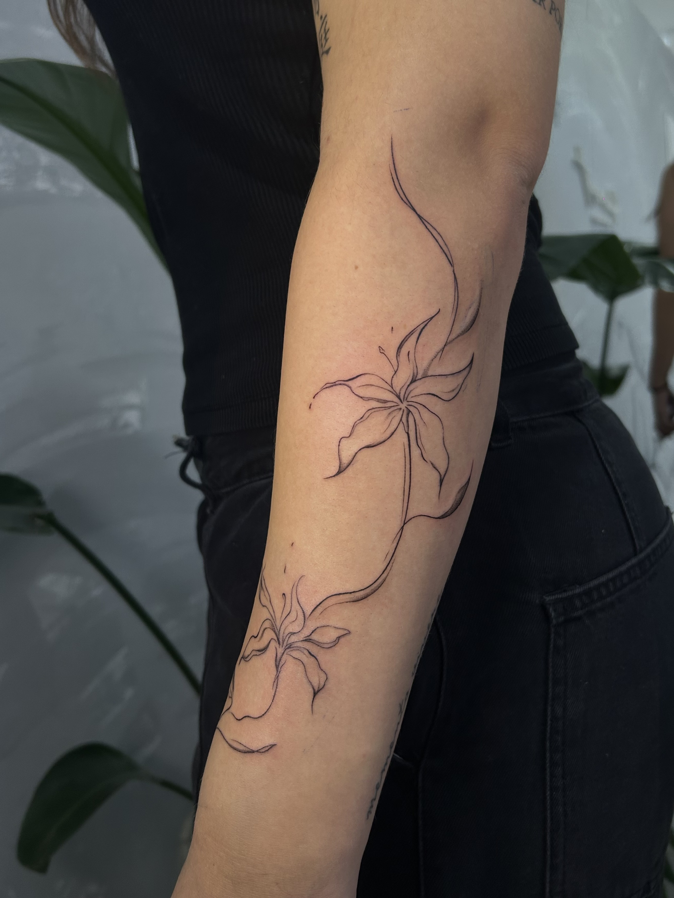
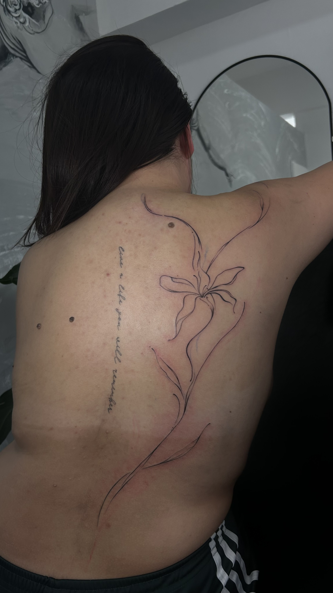
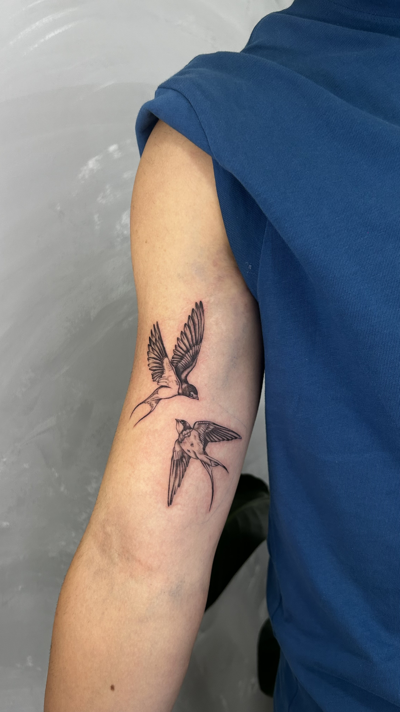
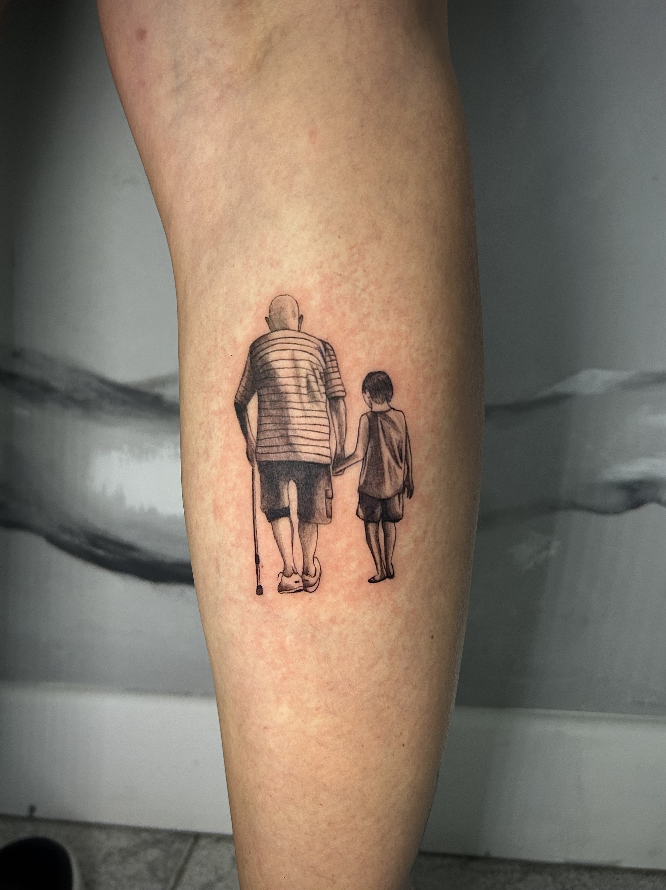
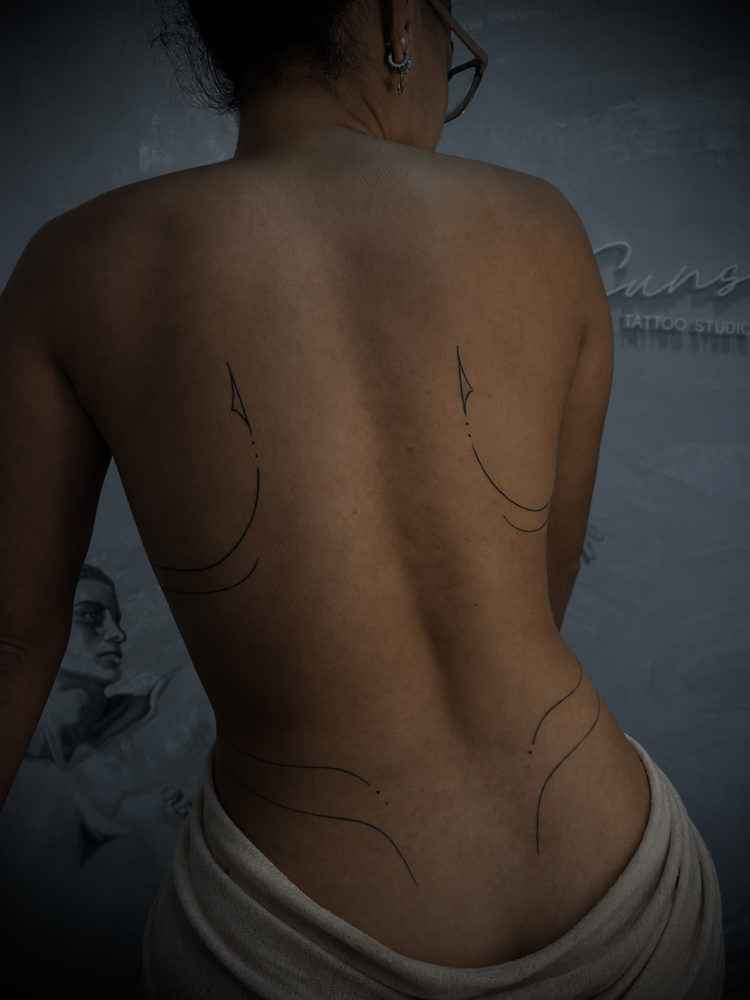

Sunset Studio
“Detrás de cada línea”

Soy Jazmín
Tatuadora desde 2023, pero mi historia con el arte empezó mucho antes.
Desde siempre sentí una conexión muy profunda con lo creativo: dibujar, observar, imaginar y transformar ideas en imágenes fue algo que me acompañó toda la vida. Esa pasión me llevó a estudiar Bellas Artes durante cuatro años, un espacio donde no solo aprendí técnicas, sino donde también fui construyendo mi mirada, mi sensibilidad y mi forma de entender el arte como un medio de expresión personal y emocional.


En medio de ese recorrido apareció el tatuaje. Primero como curiosidad, después como un interés cada vez más fuerte, hasta que ese “bichito de la tinta” terminó de instalarse en mí. Decidí formarme, hice un curso y, con mucho respeto por la práctica, pero también con miedo e incertidumbre, empecé a dar mis primeros pasos tatuando. Cada línea era un desafío, pero también una confirmación de que estaba en el camino correcto.
Mis comienzos fueron en casa. De a poco, el proyecto fue creciendo y, casi sin darme cuenta, fui transforming distintos rincones: primero mi habitación, después la oficina… cada lugar se fue adaptando a esta nueva pasión que ya no era solo un interés, sino una forma de vida. Fue un proceso tan real como gracioso, pero sobre todo muy significativo.
En 2024 di un paso enorme para mí: mudarme a un estudio en Villa Bosch. Ese cambio no solo representó crecimiento profesional, sino también un logro personal muy importante, el resultado de mucho esfuerzo, constancia y amor por lo que hago.
Hoy puedo decir que amo profundamente mi trabajo. El tatuaje, para mí, no es solo una práctica estética, es un acto de confianza y conexión. Cada persona que se acerca y decide dejar una marca en su piel me está entregando algo muy valioso, y eso lo tomo con muchísimo respeto y gratitud. Me emociona pensar que, a través de mi trabajo, puedo acompañar historias, momentos y significados que van a quedar para siempre.
Estoy profundamente agradecida con cada persona que confía en mí, que elige mi trabajo y que me permite ser parte de algo tan personal. Mi intención siempre es la misma: crear piezas únicas, sensibles y honestas, que no solo se vean bien, sino que realmente representen algo para quien las lleva.
Este camino recién empieza, pero lo transito con el corazón lleno y con la certeza de que encontré en el tatuaje una forma de vida.
Últimos Trabajos





